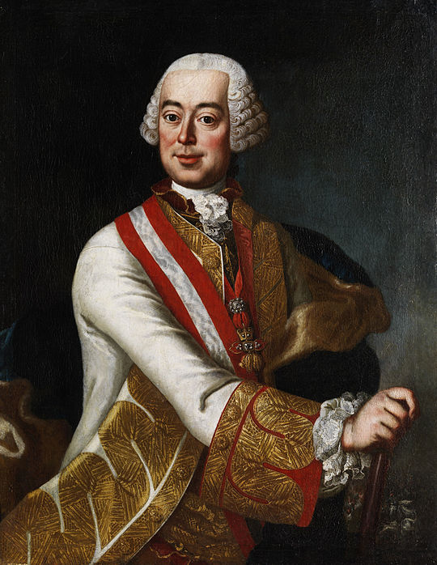

<html></html>
    <head>
        <meta charset="UTF-8">
        <link rel="stylesheet" href="css/A-3.css"/>
        <title>About US</title>
    </head>
    <body>
<div class="container">
    <div class="card">
        <div class="img">
            
        </div>
        <div class="header">    
            <h2>Leopold Joseph Von Daun</h2>
            <p>Count Leopold Joseph von Daun, Prince Tiano - Austrian military commander, Field Marshal General, President of the Hofkrigsrat
                (1762-1766). From 1758 to 1763, he was the commander-in-chief of the Austrian troops in the Seven Years' War. In the War of the Austrian Succession from 1740, Daun distinguished himself by 
                the careful leadership which was afterwards his greatest military quality.</p>
        </div>
        <div class="experience">
            <h3>Education</h3>
            <ul>
                <li class="l-1">N/A</li>
            </ul>
            <h3>Position</h3>
            <ul>
                <li class="l-1">The Field marshal</li>
            </ul>
            <p class="birth">(1705–1766)</p>
        </div>
        <div class="footer">
            <a href="About_Us.html" class="a-1">Return</a>
        </div>
    </div>
</div>
</body>
</html>